Research log · work in progress
ZipGenesis
Can a tiny seed grow back into a file?
A plain-language report of an ongoing compression study, with every number taken from its saved test records.
← Research projects00 / At a glance
- The original idea, storing a short seed that a fixed cellular rule grows back into the data, did not beat ordinary compression in any test.
- The work then moved to ordinary table compression: coding each column well, and using links between columns. This gave small gains on one real data set (air quality) that mostly did not carry over to a second one (wine quality).
- The latest run broke its own output-size limit and is recorded as failed.
- Every compressed packet was decoded back and compared byte for byte. Negative results are kept, not hidden.
Status, 3 November 2026: paused, waiting for the next planned checkpoint. No result so far counts as a compression advance.
01 / The idea
Ordinary compression (zip) looks for repeats inside a file. ZipGenesis asked a different question. Suppose sender and receiver share a fixed rule, like the cell-by-cell update rules of a cellular automaton. Could the sender then transmit only a short starting pattern, a seed, and let the rule grow the file back exactly? The idea only pays off if the seed plus everything needed to read it is smaller than what zip already gives.
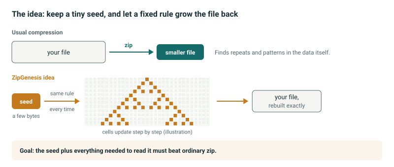
02 / Testing the seed idea
A small rule can only make a few different things
The first test tried every seed of a small cellular rule on a ring of 32 cells: 4,096 seeds in total. They produced only 335 different 4-byte results, and many seeds landed on the same few results. Out of 1,024 random 4-byte test files, the rule could produce none exactly.
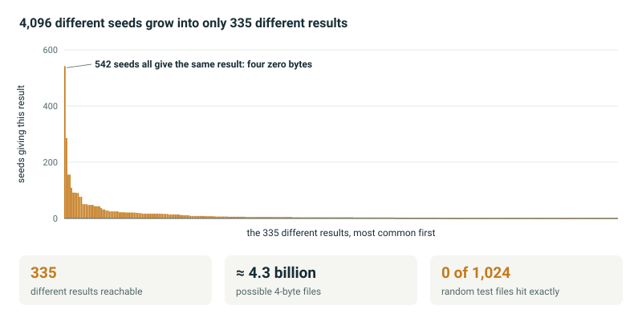
On tiny files, fixed overhead dominates
Even when a seed does exist, the packet that carries it needs a header and a few bytes of bookkeeping. For files of four or five bytes, every option ends up bigger than the file.
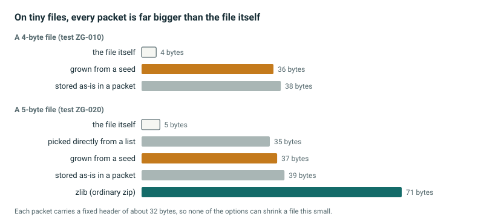
Using the rule as a guess, then fixing the errors
A more practical version uses the rule only as a first guess and then stores the differences. On 20 practice files this was the largest option of all, and never the best one. A plain lookup table with the same guesses gives exactly the same size, so the cellular rule adds nothing here.

Seeds are fragile
One hoped-for advantage was robustness: if many seeds give the same result, a damaged seed might still work. It did not. Flipping one bit of the seed gave back the right file in 184 of 3,072 cases. An ordinary error-correcting code (a Hamming code) of the same size recovered all 3,072.
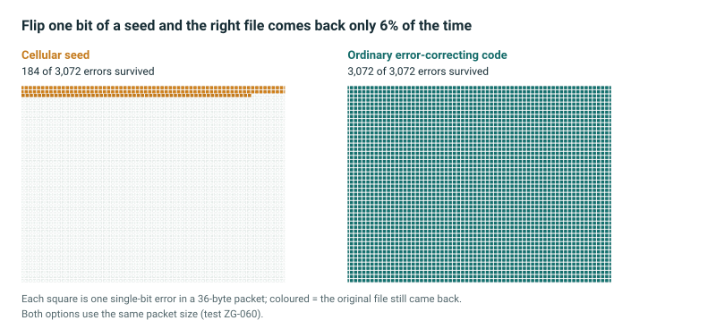
03 / Turning to ordinary table compression
After the seed tests, the study moved to well-known techniques and tested them carefully on real tables. These are established ideas from the compression literature, not new inventions; the aim was to measure honestly what they add.
Shared dictionaries for many small pieces
When many small blocks must be stored separately, a dictionary shared by sender and receiver helps a lot. But if the blocks may simply be zipped together, that is smaller still. The project’s own special tricks added very little beyond ordinary zip with the same dictionary.
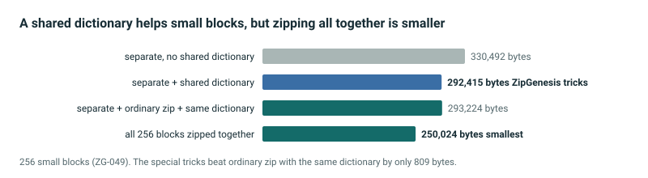
Air-quality tables: a real but narrow gain
Coding each column of a table well (for example storing small differences between rows) cut the size by about a third compared with the project’s older tools. Adding links between columns saved another 4.1%. Once the decoder program itself is counted, the lead over the best earlier option shrinks to 403 bytes.
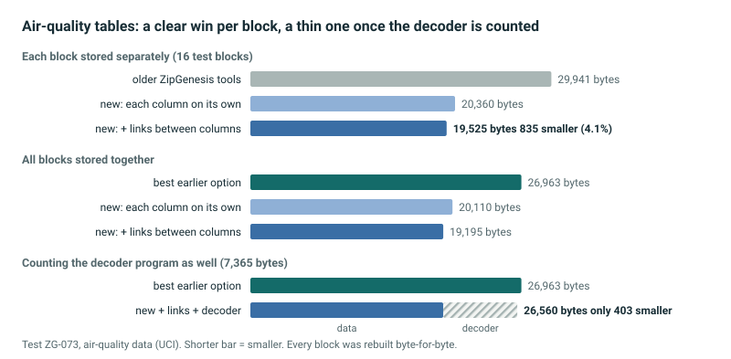
Wine tables: the gain mostly disappears
The same method, unchanged, was then tried on a second real data set. Per file it saved only 144 bytes (0.8%). When all blocks may be stored together, ordinary zip (DEFLATE) of the whole set was clearly the smallest.
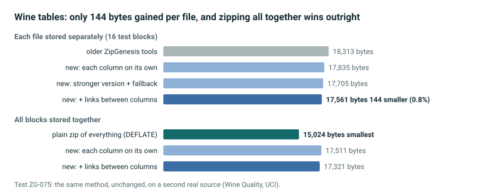
A check that the method finds what it claims
On made-up tables, the column-link method saved bytes only when the columns were truly related. When the rows of each column were shuffled, breaking the links, the gain vanished. This shows the method works as designed, even though the real-data gains are small.
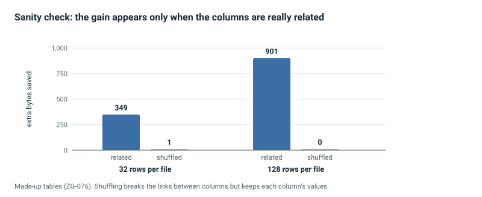
04 / Latest run
The most recent test used fresh records from both real sources at once. The new method was 616 bytes smaller on air quality but 871 bytes bigger on wine. The run also wrote slightly more output than the limit it had set for itself, so by its own rules it counts as failed. It will not be repeated on the same data.
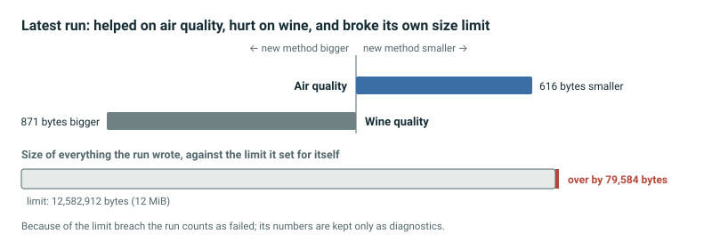
05 / All experiments at a glance
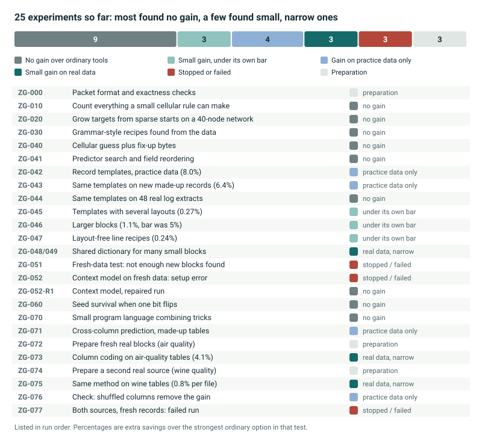
06 / How the work is run
The experiments are planned and run by an autonomous AI research agent following a written research plan. For each test the rules, data and success bar are fixed before the test data are opened; test data are used once and then retired. Every packet is decoded again, also in a separate locked-down process, and must match the original byte for byte.
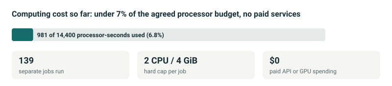
Limits. This is an exploratory pilot. The code and logs are in a private repository and have not been independently replicated or peer reviewed. Results hold only for the data and settings named. Totals from different data sets are not comparable with each other.
Data. Air Quality, UCI Machine Learning Repository, doi:10.24432/C59K5F. Wine Quality (P. Cortez et al., 2009), UCI Machine Learning Repository, doi:10.24432/C56S3T. Both CC BY 4.0.
Related work. Using links between table columns is known, for example in Corra and C3. These tests measure it under strict accounting; they do not claim a new method.
Last updated 3 November 2026. All figures are drawn from the saved test records of the ZipGenesis research branch. Back to home.